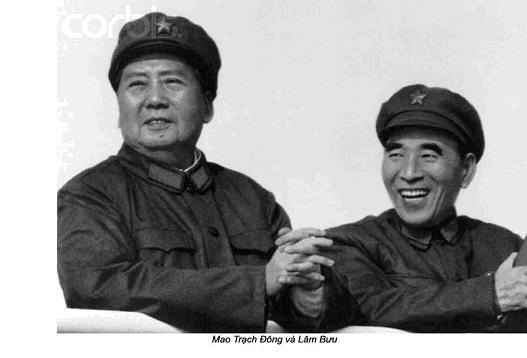

Chương 39

gày 10-7-1959, ngày họp thứ 8 ở Lư Sơn. Mao triệu tập một cuộc gặp gỡ với những người lãnh đạo địa phương. Ông nhấn mạnh, đảng chỉ có thể giải quyết các vấn đề bằng sự đoàn kết và thống nhất về tư tưởng trong đảng. Đường lối chung – kế hoạch Đại nhảy vọt nhằm mục đích đuổi kịp nước Anh trong vòng 15 năm tới – vẫn luôn luôn đúng đắn. Trong những năm qua, chúng ta đã thu được nhiều thành quả lớn lao. Mặc dù xảy ra một số thất bại, nhưng điều đó không đáng lo ngại. Mao hỏi: “Mỗi người có 10 ngón tay phải không? Chín ngón của chúng ta đã đạt thành quả và còn có mỗi một ngón không hoàn thành”.
Ông cảnh cáo tư tưởng cho rằng Trung Quốc đang đứng trước ngưỡng cửa của chủ nghĩa cộng sản. Dựa vào mức độ phát triển hiện nay, người ta chỉ nên coi công xã nhân dân là một loại hình hợp tác xã nông nghiệp thuần tuý, phát triển ở mức độ cao chứ chưa phải một tổ chức theo kiểu chủ nghĩa cộng sản. Tất cả mọi người, từ cán bộ cho đến người dân bình thường, đã có quá nhiều ảo vọng về công xã nhân dân. Trong khi làm cách mạng, chúng ta phải “trả giá” cho những bài học kinh nghiệm. Đất nước đã mất khoảng hai tỉ nhân dân tệ để làm các lò luyện kim. Nhưng bù lại nhân dân cả nước đã học được cách luyện thép. Số tiền tỉ này thực ra được coi như khoản chi phí để học một nghề, nghề luyện kim.
Mao không đợi người ta bình luận về lời phát biểu của mình, rời khỏi phòng họp ngay. Tôi phải đi theo ông. Nhưng sau đó Điền Gia Anh kể với tôi, bài phát biểu của Mao đã làm mọi người lặng đi. Người ta hiểu đó là lời cảnh cáo đối với những ai còn muốn lên tiếng chỉ trích kế hoạch Đại nhảy vọt.
Tuy nhiên, Bành Đức Hoài vẫn tiếp tục cuộc tranh luận một cách kín đáo, tuy không trực tiếp. Với tư cách cá nhân, ngày 14-7-1959 ông gửi cho Mao một lá thư viết tay khá dài. Mặc dù lúc đầu tôi không biết nội dung, nhưng tôi nghĩ, nó đã làm cho Mao rất bực bội. Ông trằn trọc cả đêm.
Sau này tôi được đọc lá thư đó. Đoạn đầu, Bành ca ngợi thành tựu của kế hoạch Đại nhảy vọt, sự tăng trưởng mạnh mẽ của sản xuất nông nghiệp và công nghiệp. Ông đề cập đến công xã nhân dân, bày tỏ những thiếu sót đã được khắc phục bởi những chính sách mới về tổ chức từ tháng 11-1958. Theo đánh giá của ông, những lò luyện kim gia đình có những mặt tích cực và cả tiêu cực. Chúng đã huy động sự tìm kiếm những khoáng sản cần thiết cho việc luyện thép trong cả nước. Nhiều người lĩnh hội được kỹ thuật mới và cán bộ được trau đồi thêm khả năng tổ chức của họ. Đó là mặt tích cực. Mặt khác, một số lượng lớn người được huy động tìm kiếm khoáng sản đã dẫn đến tình trạng phung phí quá nhiều sức lao động. Đó là mặt tiêu cực. Bành Đức Hoài còn cho rằng tiêu cực nhiều hơn tích cực.
Trong phần thứ hai của lá thư, Bành Đức Hoài nhấn mạnh đến việc cần thiết phải rút kinh nghiệm từ kế hoạch Đại nhảy vọt, ông diễn giải rằng, kế hoạch này đã khuyến khích những khuynh hướng cực tả, bóp méo ghê gớm những con số thống kê trong sản xuất và sự lạc quan tếu. Cuối thư, ông kêu gọi trong tương lai, đảng phải phân định rạch ròi đúng sai, nâng nhận thức về tư tưởng lên một mức độ cao hơn. Tuy nhiên, ông không muốn đổ lỗi cho một cá nhân nào, bởi vì điều đó có thể ảnh hưởng xấu đến sự thống nhất và những chính sách sau này của đảng.
Lá thư thật chân thành, sâu sắc và đã được cân nhắc kỹ lưỡng. Bành Đức Hoài không phải một chính trị gia mà là một người chất phác, trung thực, một chiến sĩ can đảm, không có âm mưu chính trị, ông chỉ nói lên sự thật, trong khi những người khác thường nói dối. Khác với đa số cán bộ lãnh đạo của đảng, ông không sợ Mao.
Ngày 16-7-1959, khoác độc chiếc áo choàng ngoài trắng, chân đi dép, không tất. Mao đã họp với Uỷ ban thường vụ Bộ chính trị tại biệt thự của ông. Lưu Thiếu Kỳ, Chu Ân Lai, Chu Đức và Trần Vân, những thành viên duy nhất của thường vụ đang có mặt ở Lư Sơn. Đặng Tiểu Bình đang nằm trong Bệnh viện Bắc Kinh, vì ngày 2-5-1959 ông bị trượt ngã gãy chân trong khi chơi bi-a tại Câu lạc bộ dành cho cán bộ cao cấp ở bắc Trung Nam Hải. Tôi đưa ông đến bệnh viện để người ta bó bột. Đặng nằm bệnh viện vài tuần và lúc nào cũng có một cô y tá trẻ chăm sóc. Thực ra, cô y tá này được cử đến từ Thượng Hải để phục vụ Mao. Theo lời Thạch Thụ Hán, chánh văn phòng y tế trung ương cho tôi biết, cô đã có thai trong thời gian làm việc ở đây. Người ta đã chuyển cô ta trở về Thượng Hải và ép phải phá thai.

Lâm Bưu vắng mặt trong cuộc họp. Ông vẫn mắc bệnh suy nhược thần kinh, ốm đau luôn. Sau này, tôi được biết ông rất sợ nước, sợ gió và sợ lạnh. Mây mù, những cơn mưa thường xuyên và gió lộng ở Lư Sơn làm ông rất khó chịu.
Trong cuộc họp của Uỷ ban thường vụ còn có các nhân viên của Mao tham dự. Mao tuyên bố, đã từ lâu bọn hữu khuynh ngoài đảng vẫn chỉ trích kế hoạch Đại nhảy vọt và bây giờ ngay cả trong đảng, những tiếng chỉ trích cũng ngày một nhiều hơn. Một số người cho rằng Đại nhảy vọt lợi bất cập hại. Bức thư của Bành Đức Hoài là một minh chứng.
Mao nói, sẽ đưa thư của Bành cho những người tham dự hội nghị đảng ở Lư Sơn xem, để họ có thể tự đánh giá được nội dung của nó. Ông còn doạ, nếu đảng bị chia bè kéo cánh, sẽ thành lập một đảng mới của nông dân. Nếu quân đội bị phân hoá, cũng sẽ xây dựng một đội quân khác.
Các uỷ viên của Uỷ ban thường vụ Bộ chính trị bắt đầu thảo luận về bức thư của Bành. Mao đã chỉ cho họ thấy hết ý nghĩa quan trọng của sự việc này, nên các đồng chí của ông rất dè đặt nêu ý kiến.
Sau cuộc họp, thư của Bành được sao chép gửi đến đảng bộ địa phương các cấp thảo luận. Rất ít người dám đồng tình với Bành, nhưng cũng có một vài người tỏ ra can đảm. Ngày 19-7-1959, Hoàng Khắc Thành, tổng tham mưu trưởng, bạn thân của Bành, liên kết với Chu Tiểu Châu, bí thư thứ nhất tỉnh Hồ Nam, người đã từ lâu lo ngại về cuộc khủng hoảng kinh tế, lên tiếng ủng hộ Bành Đức Hoài. Cả hai đều ca ngợi ý tốt của lá thư, tuy một số đoạn trong thư lời lẽ còn gay gắt.
Cả Lý Thuỵ, người thư ký chính trị mới của Mao, cũng cho rằng, lá thư của Bành đã vạch rõ những sai lầm chính của kế hoạch Đại nhảy vọt, phá bỏ bầu không khí tù hãm, cản trở những lời phê bình chân thành, thẳng thắn của mọi người, thậm chí ở ngay cả trong hàng ngũ lãnh đạo cao cấp của đảng.
Ngày 21-7-1959, thứ trưởng Bộ ngoại giao Trương Văn Điền, được đào tạo ở Liên Xô, đã công kích quyết liệt phong cách lãnh đạo của Mao và kế hoạch Đại nhảy vọt trong một bài phát biểu dài. Trong thập niên 1930, sau khi học ở Liên Xô về, Trương, thành viên trong phe của Vương Minh, chống lại sự lãnh đạo của Mao. Tuy vậy, về sau lại theo Mao và tỏ ra rất trung thành. Ông làm đại sứ ở Liên Xô trong một thời gian dài. Nhưng sau năm 1949 ông không còn được giữ chức vụ quan trọng nào nữa.
Trương Văn Điền vạch ra, một số người toan biến chủ nghĩa cộng sản thành hiện thực khi họ áp dụng cơ chế bao cấp, thành lập các nhà ăn tập thể ở các công xã. Ông phản đối chính sách này, đồng thời yêu cầu tập thể thảo luận tìm sự thật trong mọi vấn đề. Trương bảo, điều này nói dễ hơn làm, như chính Mao chủ tịch thường dạy. Trương gián tiếp làm mọi người nghĩ rằng, lời nói và việc làm của Mao không khớp nhau. Trương Văn Điền lý giải: “Mao chủ tịch thường dạy, chúng ta phải can đảm có những suy nghĩ khác với suy nghĩ của Chủ tịch. Chủ tịch kêu gọi chúng ta hãy kéo hoàng đế xuống ngựa, mặc dù vì thế chúng ta có thể bị mất đầu như chơi. Lời nói này bao hàm ý tốt, nhưng ai chẳng sợ mất đầu?”
Cuối cùng, Trương lên tiếng ủng hộ tinh thần dân chủ và tự do bày tỏ ý kiến:
- Chúng ta phải tạo ra một bầu không khí sôi nổi, lành mạnh, trong đó mọi người có thể công khai nói ra những suy nghĩ của chính mình. Chỉ có như vậy, mới phát huy được tinh thần đấu tranh. Cán bộ lãnh đạo phải có phong cách làm việc gương mẫu, trong môi trường cởi mở để các cấp có thể thể tự do phát biểu những điều họ suy nghĩ, phát huy sáng kiến. Bức thư của đồng chi Bành Đức Hoài rất quý giá, tổng hợp kinh nghiệm của chính chúng ta. Chủ đích của bức thư rất tốt đẹp.
Những thành viên khác trong nhóm của Trương Văn Điền, đặc biệt những người như Kha Thanh Thế, thị trưởng thành phố Thượng Hải, Tăng Huy Sinh, bí thư thứ nhất tỉnh An Huy và Trụ Đông, bí thư thứ nhất tỉnh Sơn Đông rất khó chịu với bài phát biểu, họ ngắt lời liên tục, bác bỏ những lập luận và trách cứ ông đã trực tiếp công kích Mao. Trương Văn Điền đáp lại, chẳng thà nói lên sự thật rồi chết còn hơn sống hèn kém, đau khổ.
Ngày 23-7-1959, Mao lại triệu tập một cuộc họp mở rộng toàn thể Bộ chính trị. Ông quả quyết, hiện nay có một số thành phần trong và ngoài đảng đang cấu kết với nhau công kích sự lãnh đạo của đảng. Một số kẻ ngoài đảng là bọn hữu khuynh và bây giờ có cả một số đảng viên cũng đứng về phe chúng. Mao còn nói:
- Tôi có một lời khuyên đối với những đồng chí này: khi phát biểu phải biết mình đang đi về hướng nào. Các đồng chí không được mềm lòng trước cuộc khủng hoảng. Một số đồng chí đã không đứng vững được trong giông tố. Họ không đứng vững, lắc qua lắc lại như nông dân trong một điệu nhảy mô tả cảnh cấy lúa. Họ tỏ ra thiếu tin tưởng và bi quan giống hệt tầng lớp tư sản vậy. Họ chưa phải là bọn hữu khuynh, nhưng họ ngày càng xích gần lại với chúng một cách đáng sợ.
Mao bác bỏ từng điểm trong lá thư của Bành Đức Hoài, nhấn mạnh đến những ý kiến của Bành về tình trạng lạc quan tếu, việc ông ta quả quyết chúng ta đã thất bại nhiều hơn thắng lợi. Bầu không khí cuộc họp ngày càng trở nên căng thẳng. Trong khi Mao phát biểu, Bành Đức Hoài ngồi im ở hàng ghế sau cùng của phòng họp. Ông đã cảm thấy nóng mặt. Trước lúc Mao lên phát biểu. Bành đã chất vấn Chủ tịch tại sao lại phân phát bức thư của Bành cho những người tham dự cuộc họp mà không được sự đồng ý, bởi vì lá thư này được gửi đến địa chỉ của Mao với tư cách cá nhân. Mao quỉ quyệt trả lời, Bành đã không cấm ông làm chuyện đó. Bành tức đến lặng người.
Sau khi Mao phát biểu xong, Bành lẻn nhanh ra ngoài cửa. Tôi cùng với đoàn tuỳ tùng của Mao rời khỏi phòng họp, chúng tôi chạm trán Bành ngoài cửa. Mao lập tức lên tiếng:
- Đồng chí Bộ trưởng Bành, chúng ta đâu có phải kẻ thù, còn phải nói chuyện với nhau nữa đấy.
Nhưng Bành mặt tái đi, mất bình tĩnh:
- Còn có gì mà nói nữa!
Mặt ông đỏ dần lên, vung cánh tay phải lên khỏi đầu, phẩy tay như chém không khí.
Mao nói:
- Quan điểm giữa chúng ta có quá nhiều khác biệt, tuy vậy vẫn cần phải thảo luận.
- Thảo luận chẳng có tác dụng gì.
Bành trả lời, rảo bước đi thẳng.
Lập tức dàn đồng ca từ những người chống Bành và chiến hữu của ông vang lên buộc tội họ là phái hữu khuynh. Chỉ huy dàn đồng ca dĩ nhiên là Mao chủ tịch. Bản án đưa ra rất nghiêm khắc: Bành Đức Hoài, Hoàng Khắc Thành, Chu Tiểu Châu, Trương Văn Điền bị quy hữu khuynh. Sau đó Mao quyết định triệu tập đại hội toàn thể Ban chấp hành trung ương đảng cộng sản khoá VIII. Cuộc hội thảo lần này cũng tổ chức ở Lư Sơn, lịch sử đảng cộng sản gọi là Hội nghị Lư Sơn. Ban chấp hành Trung ương đảng cộng sản Trung Quốc là cơ quan quyền lực cao nhất, để hợp pháp hành động chống Bành Đức Hoài, Mao xiết chặt sự ủng hộ của ban lãnh đạo đảng cộng sản Trung Quốc.
Hôm sau Giang Thanh xuất hiện ở Lư Sơn. Trước đó gọi cho chồng nói rất lo cho ông. Mao đã đổi ý, ông thực sự muốn gặp Giang Thanh.
Sáng 24-7-1959 Diệp Tử Long, Uông Đông Hưng và tôi ra sân bay đón đệ nhất phu nhân Trung Quốc. Vừa mới gặp mặt, Giang Thanh đã hỏi ngay sức khoẻ Mao. Giọng lạnh lùng, báo hiệu chẳng có điều gì tốt lành. Tôi nói, lãnh tụ ăn không ngon và mấy hôm nay phàn nàn ăn không được những món mà đầu bếp Lý Hỉ Vũ nấu. Tôi nói thêm, vấn đề đã được Uông Đông Hưng giải quyết ngay bằng cách gọi một đầu bếp cừ khôi từ Nam Xương. Mao đã ăn ngon miệng, món súp ba ba, một trong những đặc sản do đầu bếp mới, đã làm cho Chủ tịch hài lòng.
Giang Thanh tới Lư Sơn không chỉ để gần Mao. Người ta đưa bà đến vì mục đích chính trị. Điều này cũng dễ nhận ra do cử chỉ và thái độ của bà thể hiện. Giang Thanh bỗng nhiên hết bệnh tật, không còn uể oải. Thông thường, sau khi đến nơi bao giờ cũng tỏ ra mệt mỏi và đi nghỉ ngay. Nhưng lần này những sự kiện diễn ra ở đây làm bà trở nên sôi nổi khác thường.
Vì Mao vẫn còn ngủ, Giang Thanh đến gặp Lâm Bưu. Lâm Bưu cũng vừa mới tới vài tiếng đồng hồ, ông được đưa xuống khu nhà nghỉ dưới chân núi, nơi đó đỡ lạnh hơn. Giang Thanh nói chuyện với Lâm Bưu chừng hai tiếng, sau đó quay lên núi gặp các nhân vật chóp bu còn lại – vợ chồng Chu Ân Lai – Đặng Dĩnh Siêu, vợ chồng phó thủ tướng Lý Phú Xuân – Thái Sướng cuối cùng tất nhiên với thị trưởng Thượng Hải, Kha Thanh Thế.
Trước đây, Giang Thanh hiếm khi dính dáng vào chính trị. Hồi còn ở Diên An, trong thời gian lấy Mao, Bộ chính trị đã đưa ra một điều kiện khá nghiêm khắc, vợ lãnh tụ không được tham gia chính trị. Vì vậy Giang Thanh nhẩy vào sân khấu chính trị phải được sự thuận tình của Mao. Việc bà ta bất ngờ xuất hiện ở Lư Sơn và ngay sau khi rời máy bay đã gặp ngay các nhà lãnh đạo cao cấp đất nước chứng tỏ rằng Mao gặp khó khăn nghiêm trọng về chính trị. Việc Giang Thanh xuất hiện được xem, muốn bảo vệ chồng. Bà kết thúc cuộc “viếng thăm chính thức” vào buổi chiều cũng là lúc Mao vừa dậy.
Sớm hôm sau Giang Thanh mời tôi, nói:
- Tôi đến vội đây vì rất lo sức khoẻ của Chủ tịch. Nhưng hôm qua tôi vui mừng thấy Chủ tịch hoàn toàn sảng khoái đầu óc và không phàn nàn về sức khoẻ. Tôi tin trong việc này có công của đồng chí. Chiều qua Lâm Bưu cho tôi biết, mấy hôm rồi Chủ tịch không ăn được. Đồng chí đừng quên, bác sĩ riêng còn cần phải theo dõi cả thức ăn cho Chủ tịch nữa đấy. Vì thế đồng chí nên thường xuyên để mắt xem nhà bếp có thực hiện tốt nhiệm vụ của mình không.
Tôi hiểu Lý đã kịp qua bà phàn nàn về tôi. Nhưng tôi là bác sĩ điều trị, không phải bác sĩ dinh dưỡng, chẳng dính líu gì đến công việc theo dõi nồi niêu xoong chảo ở nhà bếp. Trong cuộc họp phê bình của Nhóm Một, Lý Ẩm Kiều đã từng chỉ trích tôi thuộc tầng lớp trên, trí thức kiêu căng. Tôi trả lời Giang Thanh, tôi chỉ theo dõi sức khoẻ của Chủ tịch, nếu Chủ tịch ăn không ngon miệng, nếu không do bệnh tật, lỗi đó do nhà bếp nấu không hợp khẩu vị. Trách nhiệm này thuộc về người khác, nói thẳng ra, đầu bếp Lý phải chịu trách nhiệm.
Tất nhiên tôi đã nói hết tất cả cho Mao, bây giờ trả lời sự răn đe của bà vợ ông, tôi bảo các vấn đề về ngon miệng trong ăn uống đã giải quyết tốt đẹp. Bà ấy gật đầu nhưng vẫn cảnh cáo tôi:
- Bác sĩ Lý, đồng chí là một người trí thức, thông minh, hoàn toàn khác Lý Ẩm Kiều. Đồng chí nhậy cảm về chính trị, đừng để kẻ thù lợi dụng trong ván bài chính trị. Hãy cảnh giác, thận trọng và cố gắng ít động chạm với chính trị trong khi nói chuyện với những người khác kể cả bạn thân.
Tôi nghe lời cảnh cáo như là sự nhắc nhở của bà bảo vệ tôi tránh khỏi cơn lốc chính trị đang nung nấu, âm ỉ ở Lư Sơn. Giang Thanh rõ ràng không muốn tôi tiếp xúc với các đối thủ của Mao chẳng hạn như Điền Gia Anh, bạn tôi. Giang hiểu rõ, trong trường hợp chống lại Mao, tôi, người gần gũi Mao nhất sẽ trở thành vũ khí lợi hại trong tay kẻ thù của lãnh tụ.
Ngày 2-8-1959, sau khi khai mạc phiên họp toàn thể lần thứ 8 của đảng cộng sản Trung Quốc khoá VIII, Mao ra đòn với các đối thủ của mình:
- Khi chúng ta đến Lư Sơn, tình hình tỏ ra rất ổn định. Chúng ta đã quyết định trao đổi ý kiến với nhau một cách cởi mở, thẳng thắn, thậm chí không có chương trình nghị sự. Tất cả mọi người đều phát biểu mang tính xây dựng, phiên họp của chúng ta giống như “Tiên ông phó hội”. Tuy nhiên dần dà mới dẫn đến căng thẳng, cho rằng không được tự do phát biểu, tự do bày tỏ tư tưởng của mình. Lối phát biểu tự do vô tổ chức mà chúng ta không cho phép mà họ không thích. Họ đã tìm cách bới lông tìm vết những điều đang thảo luận, gây căng thẳng. Họ chỉ trích, chờ cơ hội đánh đổ đường lối chung của đảng. Giờ đây, trong cuộc hội thảo này đã xuất hiện sự chia rẽ, rạn nứt trong đảng. Trong hơn 9 tháng vừa qua, chúng ta đã phải đấu tranh chống phái hữu khuynh. Tình hình biến chuyển đột ngột, chúng ta phải đương đầu với các phần tử tả khuynh, tấn công một cách điên cuồng vào đảng, vào những người lãnh đạo đảng, phủ màn khói lên những thành quả của nhân dân, những thành tích không ai chối cãi được trong việc tái thiết xây dựng chủ nghĩa xã hội.
Lưu ý, trong bài phát biểu khai mạc Hội nghị Ban chấp hành Trung ương đảng cộng sản và những lần phát biểu sau, Mao vẫn giữ giọng căng thẳng. Ông kêu gọi những người tham gia hội nghị lên án “nhóm chống đảng”, gọi Bành Đức Hoài là kẻ thù của đảng và nhân dân. Những lời bào chữa, tranh luận của những người đứng về phía Bành Đức Hoài, đã không cứu nổi ông phó thủ tướng kiêm bộ trưởng quốc phòng. Thực ra thư của Bành Đức Hoài không hề chống đảng, chống Mao. Nhưng dưới sự chỉ đạo trực tiếp của Mao, lá thư trở thành âm mưu thâm độc nào đấy. Ban chấp hành Trung ương đảng yêu cầu Bành Đức Hoài, những người ủng hộ ông phải giải thích “bắt đầu từ khi nào, với mục đích gì” họ đã tham gia âm mưu chống đảng.
Về sau, trong cuộc nói chuyện với Mao tôi hiểu Chủ tịch đã dùng thủ đoạn bóp méo sự thật, thổi phồng sự việc để bức hại Bành Đức Hoài. Ông nói với tôi chẳng hề dấu giếm gì:
- Lịch sử và chân lý thường là hai ngả đối lập.
Tôi tình cờ nhớ lại cuộc nói chuyện trên tàu thuỷ mà chúng tôi đi dọc sông Lư Giang hồi nọ. Khi đó, qua lời Điền Gia Anh, lần đầu tiên tôi được biết được nạn đói ở tỉnh Tứ Xuyên, còn Vương Kính Tiên lại cung cấp về các ngón làm tình của lãnh tụ. Tất cả cuộc nói chuyện ngày ấy trên boong tầu thuỷ bây giờ mới có một ý nghĩa sâu sắc. Ba thư ký của Mao, Điền Gia Anh, Trần Bá Đạt và Hồ Kiều Mục đã được đưa xuống Tứ Xuyên, Phúc Kiến và An Huy thị sát tình hình thực tế. Mao mơ ước nghe từ họ về những thành tựu xuất sắc của chính sách thiên tài của ông Đại nhảy vọt. Tuy nhiên, thay cho điều này, cả ba ông thư ký lại đem đến những tin buồn về sự tan rã của đất nước và nạn đói. Bản báo cáo của ba thư ký chứa đựng một cách thẳng thắn chi tiết đau khổ khủng khiếp của dân Trung Quốc. Các bí thư đảng của ba tỉnh, Lý Tinh Toàn, Diệp Phổ và Tăng Huy Sinh vẫn chễm chệ trên ghế quyền lực. Ba ông vua tỉnh này đến Lư Sơn đã lựa chọn phương thức bảo vệ bằng cách tấn công vô liêm sỉ và không thương tiếc vào bản báo cáo của ba thư ký lãnh tụ.
Sau lời phát biểu của Mao, người này nối người kia lên bục công kích những người bị buộc tội. Thị trưởng Thượng Hải, Kha Thanh thế, bí thư Hồ Bắc, Vương Nhiệm Trọng, bí thư tỉnh Quảng Đông, Đào Chú, cuối cùng Bộ trưởng công an La Thuỵ Khanh. Họ như những con hổ dữ, chửi bới Bành Đức Hoài, những người ủng hộ ông, trong đó người ta nghe thấy không ít lần nhắc đến tên Điền Gia Anh.
La Thuỵ Khanh chỉ tay vào Điền Gia Anh, phê phán kịch liệt:
- Người như đồng chí làm sao hiểu được chủ nghĩa Marx. Đồng chí chỉ mang đến chuyện bậy bạ. Ai cho phép đồng chí quyền đem những ý kiến ấy đến hội nghị toàn thể Ban chấp hành Trung ương.
Sau chuyến đi về quê Mao, La Thuỵ Khanh trở thành người bảo vệ ông chủ mình.
Lý Thuỵ, viên thư ký mới của Mao cũng phát biểu. Khi Lý Thuỵ nói đôi ba câu phân trần, Chu Ân Lai thô bạo cắt ngang:
- Đây là hội nghị Ban chấp hành Trung ương đảng. Đồng chí không phải là Uỷ viên trung ương vì thế không có quyền phát biểu.
Sự giận dữ được hâm nóng thêm, phê bình, chỉ trích vẫn tiếp tục. Ba vị thư ký Trần Bá Đạt, Hồ Kiều Mục, Điền Gia Anh sự trừng phạt nghiêm khắc đang bị treo lơ lửng trên đầu. Họ bị buộc tôi vào việc nhóm “chống đảng” mới.
Cuối cùng như thường lệ, Mao phát biểu, phán quyết của ông vang lên ngày 11 tháng 8, được coi là bản phán quyết tối hậu và khắc nghiệt nhất:
- Bành Đức Hoài và đồng bọn đã không theo tư tưởng xã hội chủ nghĩa của giai cấp vô sản. Bọn họ chỉ là những người dân chủ tư sản chui vào đảng với cái vỏ mác-xít. Riêng Trần Bá Đạt, Hồ Kiều Mục, Điền Gia Anh là những học giả trí thức trong đảng, tôi tin họ sẽ sửa chữa để xứng đáng đứng trong hàng ngũ chúng ta. Đảng cần các đồng chí ấy, tuy nhiên về Lý Thuỵ, thư ký mới, tôi không thể nói điều gì nữa. Đồng chí này vào đảng chưa lâu và thái độ của đồng chí ấy là điều đáng ngạc nhiên.
Sau lời phát biểu của Mao, Trần Bá Đạt, Hồ Kiều Mục, Điền Gia Anh được giải thoát, còn Lý Thuỵ bị liệt vào “nhóm chống đảng”.
Đến lượt các nhân viên trong Nhóm Một bị khiển trách. La Thuỵ Khanh chủ toạ phiên họp ngày 12-8, lên giọng, bồi thêm Lý Thuỵ:
- Đồng chí hoàn toàn quên rằng số phận tốt đẹp đang mở ra cho đồng chí. Đảng tin tưởng, tạo điều kiện để đồng chí phục vụ tốt cho lãnh tụ. Nhưng đồng chí không biết tự trọng. Tôi được biết thay vì bảo vệ uy tín, đồng chí a dua theo kẻ khác, vạch áo cho người xem lưng lãnh tụ. Không những thế còn định trút trách nhiệm lên đầu người khác. Cả đồng chí nữa, đồng chí Vương Kính Tiên phát biểu thiếu cẩn trọng, tiếp tay cho các phần tử chống đảng. Chúng tôi sẽ nói tỷ mỉ về điều này sau khi chúng ta trở về Bắc Kinh.
La Thuỵ Khanh đã hợp thức hoá những quy tắc ứng xử như điều luật. Những người phụ vụ lãnh tụ phải biết im lặng, dù là ai chăng nữa, không bao giờ được bàn tán, trao đổi những gì liên quan tới đời tư lãnh tụ hoặc các sự kiện xảy ra trong Nhóm Một. Có nghĩa, chúng tôi không được tâm sự, trò chuyện với nhau về Mao, về Nhóm Một. Tôi cảm thấy rằng sự việc này cũng chưa chấm dứt, một số người có thể bị đuổi, có khi tệ hơn bị buộc tội không trung thành với lãnh tụ.
Trong phiên họp bế mạc ngày 16 tháng 8, những người tham gia được phát các tài liệu trong đó Mao viết rằng hội nghị Lư Sơn đi vào lịch sử như một biểu tượng của sự đấu tranh giai cấp không khoan nhượng với phái hữu. Mao nói:
- Đây không phải là cái gì khác, đây là cuộc đấu tranh giai cấp thực sự, cuộc đấu tranh sống còn giữa hai giai cấp mạnh nhất: vô sản và tư sản. Cuộc đấu tranh này chưa hẳn đã dịu đi sau mười năm cách mạng xây dựng chủ nghĩa xã hội.
Những lời này đã đẩy Bành Đức Hoài và những người theo ông vào vị thế giai cấp tư sản, kẻ thù của đất nước.
Hội nghị Lư Sơn đã thông qua văn bản kết án những hoạt động chống đảng của Bành Đức Hoài, bảo vệ đường lối chung, bảo vệ chính sách Đại nhảy vọt.
Đảng đã phát động trong cả nước chiến dịch chống phái hữu. Bây giờ hàng ngũ phái hữu lại được bổ xung cả những quan chức đảng và nhà nước, những người từng chia xẻ quan điểm với Bành Đức Hoài về Đại nhảy vọt. Đảng nói, họ bị nhiễm căn bệnh mới, căn bệnh “thân hữu”.
Quyết định của lãnh đạo đảng cộng sản làm tôi bối rối, lo lắng không sao hiểu được. Người ta quy tội, xếp Bành Đức Hoài – một người trung thực vào hàng ngũ đối kháng trong cuộc “đấu tranh giai cấp” – coi ông một phần tử “chống đảng”, kẻ “cơ hội hữu khuynh”, xấu xa chẳng khác gì Quốc dân Đảng. Tôi biết rõ, Bành Đức Hoài chưa bao giờ là kẻ thù của đảng, một người trung thực, nhân cách tốt.
Tôi không dính dáng lôi thôi vụ lộn xộn chính trị này, tuy anh bạn Điền Gia Anh của tôi rơi vào búa rìu báo chí, mặc dù tôi đã được nghe những lời kể trung thực của ông trên tàu thuỷ chạy dọc sông Dương tử. Mao tin tôi và tôi cũng không nghi ngờ về sự chân thật của ông. Vì thế sự phê bình lãnh tụ tôi xem như là không phải đạo. Có thể giải thích sự im lặng của tôi do sự cẩn trọng và cả sự ngây thơ.
Tuy thế những việc xảy ra ở Lư Sơn làm tôi đau lòng. Các cuộc cãi vã đấu đá nhau liên miên của các nhân vật quanh lãnh tụ trong Nhóm Một đã làm tôi mệt mỏi.
Tất cả những điều đó ảnh hưởng đến sức khoẻ của tôi. Cơn bệnh loét dạ dày bắt đầu hành. Tôi bị đau nặng, không thể ăn gì cả trừ hoa quả và nước quả ép. Một thời gian sau bắt đầu chẩy máu bên trong. Thuốc thang có trong tay không giúp gì được. Tôi yếu đi nhiều và sút cân nhanh chóng.
Giám đốc bệnh viện địa phương Vương Thâu Tiên khuyên tôi rời Lư Sơn về điều trị bệnh ở Nam Xương. Nhưng tôi lại lo, chuyện tôi bỏ đi người ta có thể đánh giá là tránh tội. Mọi người cho rằng tôi cũng dây dưa vào vụ tai tiếng chính trị ở hội nghị Lư Sơn, vì tôi là bạn của Điền Gia Anh.
Mao luôn để ý những người của ông đang ở đâu trong thời gian hội nghị, xem họ có nghe những lời phát biểu của ông và những người khác trong các buổi thảo luận hay không. Từ đó ông sẽ phán đoán được sự trung thành của chúng tôi đối với ông với đảng. Ông cần sự ủng hộ không nói bằng lời của chúng tôi. Nếu tôi kể cho ông nghe về bệnh của mình, liệu ông có tin hay không – tôi chưa hề kể hoặc phàn nàn với ông về bệnh tật. Tôi bỏ Lư Sơn, Mao sẽ nghi ngờ lòng trung thành, có một cái gì đó liên quan tới Bành Đức Hoài và có uẩn khúc về chính trị. Điều đó rất logic. Vì thế khôn ngoan nhất, tôi không nên kể với Mao về chứng bệnh chảy máu dạ dày, cố gắng tự chữa bằng cách ăn kiêng, uống thuốc.
Tuy nhiên việc chảy máu dạ dày vẫn không hết. Các cuộc họp hàng ngày 12 tiếng liền, ở đó tôi buộc phải chịu đựng cơn đau dạ dày cộng với những cơn mất ngủ, cơn đau về đêm đã dẫn đến tôi yếu hẳn và bị ngất những ngày cuối hội nghị.
Có ai đó đã nói với Hồ Kiều Mục về bệnh tật. Chúng tôi không gặp nhau gần tuần lễ. Khi nhìn thấy thân hình tôi, ông thất kinh. Hồ Kiều Mục khuyên tôi nên đi viện chữa, theo kinh nghiệm của ông, khi chảy máu dạ dày nên chữa ngay, không được chần chừ. Khi biết những băn khoăn của tôi, ông hứa sẽ nói chuyện trực tiếp với Mao để có giải quyết cho tôi rời Lư Sơn.
Hồ Kiều Mục ngay sau đó gặp Mao. Khi biết tôi bị bệnh, Mao đồng ý gửi tôi cấp tốc về Bắc Kinh điều trị. Phó cục trưởng bảo vệ sức khoẻ Diệp Tử Long được giao nhiệm vụ gửi tôi tới chỗ tốt nhất để chữa bệnh.
Từ Xương Giang về Bắc Kinh hàng ngày có máy bay chở tài liệu và người của đảng. Tôi được xếp chỗ trong một chuyến bay và Diệp Tử Long đi kèm theo.
Trước khi khởi hành, tôi đến từ biệt Giang Thanh. Cảnh đẹp ở Lư Sơn tạo cho bà thi thố khả năng chụp ảnh, khi tôi tới, bà đang thích thú với các tấm ảnh. Nhìn thấy tôi, Giang Thanh bảo, bà và Chủ tịch vài tuần nay bận tối mắt tối mũi, không biết tôi bị bệnh nặng thế. Nhưng bà lại rất mong tôi lưu lại đến khi kết thúc kỳ họp, bay về Bắc Kinh cùng vợ chồng bà.
Để củng cố niềm tin và động viên tôi, Giang Thanh không bỏ lỡ cơ hội nhắc lại rằng Mao rất tin tưởng và cả hai vợ chồng bà cư xử với tôi với một tấm lòng thành thật và quan tâm.
Rất tiếc, những lời ca tụng của bà không làm tôi bớt đau. Tôi lịch sự đáp lại:
- Tôi cảm thấy bệnh tật đã gây phiền toái cho bà và Chủ tịch, vì thế tốt nhất tôi nên quay về thủ đô.
Giang Thanh đồng ý. Tôi nói thêm rằng khi tôi vắng mặt, bác sĩ Hoàng Thụ Trạch thay tôi đảm nhiệm.
Tôi đề nghị Giang Thanh thay mặt tôi cám ơn lãnh tụ, nhưng Giang Thanh từ chối nói tôi nên tự làm việc đó.
Mao nằm trên giường và đọc sách sử đời Minh. Dường như ông thích đọc tiểu sử nhân vật Hải Thuỵ, người dám nói sự thật cho vua.
Tôi giải thích, công việc của tôi bây giờ sẽ do Hoàng Thụ Trạch đảm nhiệm. Mao không phản ứng gì, nói tôi nên chữa ở bệnh viện Bắc Kinh. Bệnh viện này dành cho cán bộ cao cấp. Những người lãnh đạo đảng, nhà nước có tiêu chuẩn được chữa trong đó thấp nhất là cấp thứ trưởng và một số “nhân vật dân chủ” có chức vụ cao, như Quách Mạt Nhược.
Bệnh viện do người Đức xây dựng từ đầu thế kỷ, nơi có đội ngũ thầy thuốc và trang thiết bị tốt nhất Trung Quốc.
Mao bày tỏ hy vọng tôi nhanh chóng bình phục, nhắc tôi không kể cho ai biết về sự kiện hội nghị Lư Sơn.
Khi biết phải thay tôi, Hoàng Thụ Trạch rất lo, nhưng ông ta không còn lối thoát. Tôi giao lại cho ông hồ sơ bệnh án của Mao, tóm tắt sức khoẻ lãnh tụ, khuyên ông nên chú ý những gì, điều cần phải làm trước. Ông cám ơn tôi về sự chân thành, gọi điện cho cục trưởng bảo vệ sức khoẻ Thạch Thụ Hán và giám đốc bệnh viện Bắc Kinh Cơ Túc Hoa đề nghị họ đón tôi ở sân bay thủ đô.
Tôi chia tay La Thuỵ Khanh và Dương Thượng Côn. La Thuỵ Khanh cũng như Mao khuyên tôi nên giữ gìn sức khoẻ, thực hiện mọi yêu cầu của bác sĩ. Ngoài ra, nhắc tôi về tình hình phức tạp trong nước, ông đe:
- Tất cả cái gì đồng chí nghe được ở đây, tạm thời phải giữ bí mật, khi nào cần, đảng sẽ cho nhân dân biết hết sự thật.
Dương Thượng Côn gắn bệnh của tôi với chứng căng thẳng, do tôi thường xuyên va chạm và cãi cọ trong thời gian gần đây với Lý Ẩm Kiều. Ông nói:
- Nhóm Một giống như một hộp thuốc vẽ lớn. Không ai ở trong đó mà không phải chọn một màu nhất định. Đồng chí đã được nghe rất nhiều ở Lư Sơn. Tôi đề nghị đồng chí, nếu có dịp, tới thăm đồng chí Đặng Tiểu Bình. Đồng chí ấy cũng vừa ra viện. Tôi rất muốn đồng chí kể cho Đặng Tiểu Bình nghe về hội nghị Lư Sơn.
Những lời này thật bất ngờ với tôi. Mao và La Thuỵ Khanh nhắc nhở tôi im lặng, Dương Thượng Côn lại muốn cho sếp của ông biết. Mao và La Thuỵ Khanh đã căn dặn tôi phải giữ bí mật tất cả những gì xảy ra ở Lư Sơn. Nhưng tôi biết, phải im lặng để tránh cho mình những rắc rối. Bệnh viện Bắc Kinh là lá chắn che chở tôi trước cơn lốc chính trị. Các nhà lãnh đạo đảng cũng thường dùng bệnh viện làm nơi điều trị những vết thương chính trị của họ. Tôi dự tính sẽ ở lại đó càng lâu càng tốt, để chuẩn bị cho việc tôi rút khỏi Nhóm Một, trở thành bác sĩ phẫu thuật cứu người.
Uông Đông Hưng và chủ tịch Hội đồng nhân dân Giang Tây, Phương Chí Xuân, tiễn tôi ra sân bay, tặng tôi khá nhiều quà, một chiếc giỏ to đựng đầy hoa quả, những hộp chè Lư Sơn và mười chai rượu vang của tỉnh Giang Tây. Vì bị viêm dạ dày, không được uống rượu, nhưng Uông bảo tôi nên đem về tặng bạn bè.
Khi chiếc ô tô lăn bánh trên con đường núi gập ghềnh, dần dần xa nơi hội nghị họp, tôi lại càng cảm thấy bớt căng thẳng. Tôi đã bỏ lại sau lưng sự phân hoá đang tiềm ẩn trong nội bộ đảng. Giấc mơ về Trung Quốc, về đảng của tôi đã biến mất. Hình ảnh của Mao trong tôi đã tan vỡ. Hy vọng duy nhất của tôi, mong sao có thể tự cứu được mình thoát khỏi tai hoạ này. Càng xa Lư Sơn bao nhiêu, chứng đau dạ dày càng đỡ hành hạ tôi bấy nhiêu. Ở Lư Sơn, tôi không tài nào chợp mắt, từ máy bay cất cánh tôi bắt đầu thiếp đi, khi máy bay hạ cánh ở Bắc Kinh, tôi vẫn còn ngủ li bì. Tôi là hành khách duy nhất trong chuyến bay.